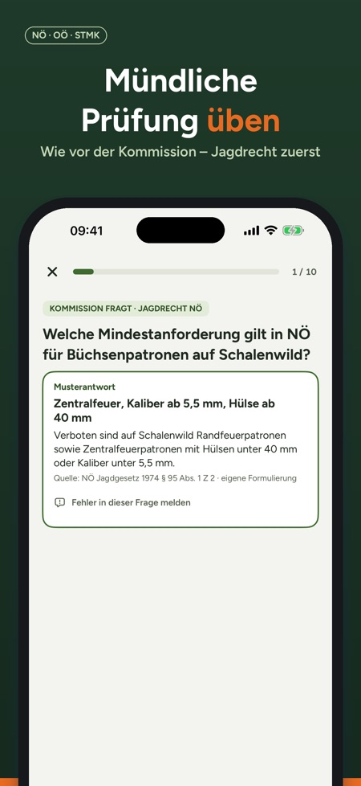
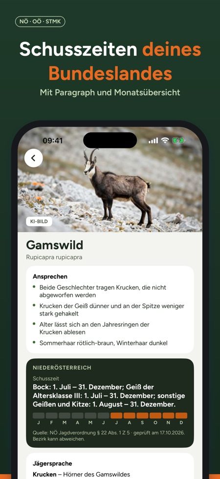
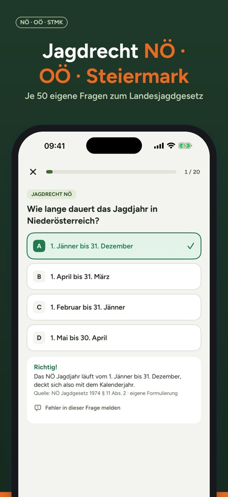

Übe die mündliche Jagdprüfung wie vor der Kommission, mit dem Jagdrecht und den Schusszeiten deines Bundeslandes. Für Niederösterreich, Oberösterreich und die Steiermark.



Für Niederösterreich, Oberösterreich und die Steiermark. Weitere Bundesländer folgen.
Nein, die App enthält nur österreichisches Jagdrecht.
Du beantwortest offene Fragen laut, deckst die Musterantwort mit Quelle auf und bewertest dich selbst. Nicht Gewusstes landet bei Meine Fehler.
400 Fragen je Bundesland, davon 50 zum eigenen Landesjagdgesetz, dazu Wildtierkunde, Waffenkunde, Jagdhunde, Wildbrethygiene, Naturschutz und Erste Hilfe.
Ja, mit 40 Fragen in 60 Minuten. Sie ist an den Prüfungsstoff angelehnt und kein amtliches Format.
Nein, die Vollversion ist ein Einmalkauf mit Familienfreigabe. Mit 30 Fragen, einer Simulation, einer mündlichen Runde und 10 Wildarten kannst du vorher testen.
Ja, sie funktioniert offline.
Übe die mündliche Jagdprüfung wie vor der Kommission – mit dem Jagdrecht und den Schusszeiten deines Bundeslandes. Für Niederösterreich, Oberösterreich und die Steiermark.
Wichtig: Die App enthält nur österreichisches Jagdrecht. Für die Jägerprüfung in Deutschland ist sie nicht geeignet.
DIE MÜNDLICHE PRÜFUNG
- In NÖ, OÖ und der Steiermark wird die Theorie mündlich vor einer Kommission geprüft
- Offene Fragen durch alle Sachgebiete, Jagdrecht deines Bundeslandes zuerst
- Laut antworten, Musterantwort mit Quelle aufdecken, selbst bewerten – Nicht-Gewusstes landet bei „Meine Fehler“
JAGDRECHT DEINES BUNDESLANDES
- 400 Fragen je Bundesland mit Erklärung und Quellenangabe, davon 50 zum eigenen Landesjagdgesetz
- Dazu Wildtierkunde, Wildökologie & Hege, Waffenkunde & Ballistik, Jagdbetrieb & Waidgerechtigkeit, Jagdhunde, Wildbrethygiene, Naturschutz und Erste Hilfe
- Fortschritt je Sachgebiet und Prüfungsbereitschaft auf einen Blick
- Prüfungssimulation mit 40 Fragen in 60 Minuten – angelehnt an den Prüfungsstoff, kein amtliches Format
WILD ANSPRECHEN UND SCHUSSZEITEN
- 50 Wildarten, darunter Gams, Steinwild, Murmeltier und Auerwild, mit Merkmalen zum Ansprechen, Jägersprache und Lebensraum
- Schusszeiten deines Bundeslandes mit Paragraph, Prüfdatum und Monatsübersicht; Filter „Schusszeit jetzt“ und „Geschont“
- Bildfragen: Trittsiegel und Wildarten erkennen – mit eigenen Zeichnungen
VOM JUNGJÄGERKURS ZUR JAGDKARTE
- Prüfungsteile, Kosten, Anmeldung und Tipps für die mündliche Prüfung – mit Quellen
- Prüfungstermin eintragen: Erinnerungen 30, 14, 7 und 1 Tag vorher (nur auf deinem Gerät)
EINMAL KAUFEN, KEIN ABO
30 Fragen, eine Simulation, eine mündliche Runde und 10 Wildarten kannst du ohne Kauf ausprobieren. Die Vollversion schaltet alle Fragen, Simulationen und Wildarten für alle Bundesländer frei, mit Familienfreigabe. Funktioniert offline, im hellen und dunklen Modus.
Entdeckst du einen Fehler in einer Frage? Direkt in der Erklärung „Fehler in dieser Frage melden“ antippen.
Weitere Bundesländer folgen.
Hinweis: Jagdprüfung Österreich ist ein unabhängiges Lernangebot und steht in keiner Verbindung zu Landesjagdverbänden oder Behörden. Alle Fragen sind eigene Formulierungen mit Quellenangabe; Angaben ohne Gewähr.